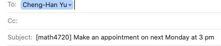
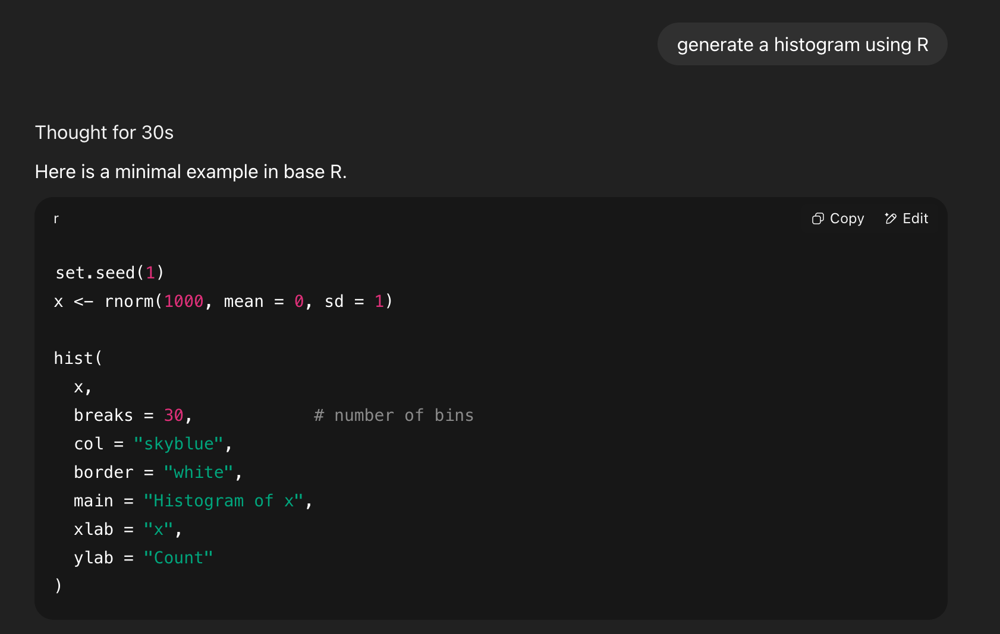

Syllabus
Time and location
| Day | Time | Location | |
|---|---|---|---|
| Sec 104 | Tu & Th | 3:30 AM - 4:45 PM | Cudahy Hall 118 |
Office Hours
My in-person office hours are TuTh 4:50 – 5:50 PM and We 12 - 1 PM in Cudahy Hall room 353.
We can schedule an online meeting via Microsoft Teams if you need/prefer.
Prerequisites
MATH 1400, 1410, or 1450.
Basic computer and internet use expected. The course will also assume facility with using the internet and a personal computer.
A portion of the course involves programming in using RStudio or Posit Cloud, but prior programming experience is not required.
E-mail Policy
I will attempt to reply your email quickly, at least within 24 hours.
Expect a reply on Monday if you send a question during weekends. If you do not receive a response from me within two days, re-send your question/comment in case there was a “mix-up” with email communication (Hope this won’t happen!).
Please start your e-mail subject line with [math4720] or [mssc5720] followed by a clear description of your question. See an example below.
Email etiquette is important. Please read this article to learn more about email etiquette.
-
I am more than happy to answer your questions about this course or statistics in general. However, due to time constraint, I may choose NOT to respond to students’ e-mail if
The student could answer his/her own inquiry by reading the syllabus or information on the course website or D2L.
The student is asking for an extra credit opportunity. The answer is “no”.
The student is requesting an extension on homework. The answer is “no”.
The student is asking for a grade to be raised for no legitimate reason. The answer is “no”.
The student is sending an email with no etiquette.
Textbooks
[IS] (optional) Introduction to Statistics, by Dr. Cheng-Han Yu. (My online book)
[IMS] (optional) Introduction to Modern Statistics, 2nd edition, by Mine Çetinkaya-Rundel and Johanna Hardin. Publisher: OpenIntro. (computation and data-oriented)
Grading Policy
| Category | Weight |
|---|---|
| 8 Homework sets | 10% |
| 4 Quizzes | 20% |
| 2 Exams | 50% |
| some Worksheets | 10% |
| some Group Activities | 10% |
You will NOT be allowed any extra credit projects/homework/exam to compensate for a poor average. Everyone must be given the same opportunity to do well in this class. Individual exam will NOT be curved.
The final grade is based on your earned percentage and the grade-percentage conversion Table. \([x, y)\) means greater than or equal to \(x\) and less than \(y\). For example, 94.1 is in \([94, 100]\) and the grade is A and 92.8 is in \([90, 94)\) and the grade is A-.
| Grade | Percentage |
|---|---|
| A | [94, 100] |
| A- | [90, 94) |
| B+ | [87, 90) |
| B | [83, 87) |
| B- | [80, 83) |
| C+ | [77, 80) |
| C | [73, 77) |
| C- | [70, 73) |
| D+ | [65, 70) |
| D | [60, 65) |
| F | [0, 60) |
- This is not a course that gives most of students grade A. If you want to obtain a good grade, study hard. No pain, no gain.
Homework
Homework will be assigned through the course website.
To submit your homework, please go to D2L > Assessments > Dropbox and upload your homework in PDF format.
There will be 8 homework sets.
Every homework is due by Friday 11:59 PM (Don’t miss it. This is a hard deadline. No late submission).
MSSC 5720 students may have more or different homework questions.
Homework is graded as complete or incomplete. Each incomplete set results in a 2% deduction from your overall grade.
Generative AI (GenAI) is allowed, but you must carefully cite it or reveal your use of AI. See Section 7 for more details.
Quizzes
There will be 4 in-class 15-min quizzes on Thursdays.
Quiz questions are similar to the questions in the homework assignments.
Quizzes are individual and in closed-book and no-tech format, except a calculator.
❌ No cheat sheet or GenAI is allowed.
No make-up quizzes unless you got an excused absence.
Each quiz is worth 5% of your overall grade.
Option: If you miss a quiz due to an excused absence as defined in Attendance in Academic Regulations, the 5% allocated to that quiz will be transferred to either the midterm exam or the final exam, whichever is closest in time and has not yet been graded. For example, if you miss Quiz 2 and the midterm exam has not yet taken place, then the midterm exam will be worth 30% instead of 25%.
If you miss more than one quiz, only one missed quiz can be replaced by transferring its weight to an exam. Any additional missed quizzes will receive a score of 0%.
Exams
There will be two exams: the midterm exam and the final exam.
Each exam has an in-class part and a take-home part. The in-class part tests your understanding of mathematical and statistical intuitions. The take-home part tests your ability to conduct statistical data analysis using statistical software such as R.
For the in-class part, one letter-size cheat sheet is allowed. It must be turned in with your exam.
For the take-home part, you are allowed to use GenAI tools. However, you must carefully cite it or reveal your use of AI. See Section 7 for more details.
Please go to Assessments > Dropbox to submit your take-home exam in PDF format.
The midterm exam covers Weeks 1 to 7. The final exam covers all course material.
No make-up exams will be given for any reason unless you have an excused absence.
Option: If you miss the midterm exam due to an excused absence defined in Attendance in Academic Regulations, its 25% weight will be added to your final exam, i.e., 25% + 25% = 50%.
In-Class Worksheets
Several worksheets will be distributed and completed during class sessions.
The worksheets are graded as complete or incomplete.
Each incomplete sheet results in a 1% deduction from your overall grade.
In-Class Group Activities
There are several in-class group activities.
The group activities are graded as complete or incomplete.
Each incomplete activity results in a 2% deduction from your overall grade.
Generative Artificial Intelligence (GenAI) Policy
You are responsible for the content of all work submitted for this course.
For your homework, take-home exams, or any take-home work, you are allowed to use generative AI tools such as ChatGPT to generate a draft of text of your work.
-
To avoid any academic integrity issue, you must cite your AI usage, or screenshot your entire AI usage history. Check the followings on how to cite it.
-
If you use GenAI, please include the followings in your submitted work:
- Why/How I used AI (prompts or questions)
- Generated output (screenshot or copy-paste excerpt)
- How I used the output
Here is an example.
-
Why/How I used AI (prompts and questions)
- I asked ChatGPT to generate a histogram using R.
- Generated output (screenshot or copy-paste excerpt)

-
How I used the output
- I reviewed the suggestions, but I did not use the exact code. Instead, I change the code format and breaks value to 50.
Academic Integrity
- Watch the video below to learn the importance of using GenAI properly.
This course expects all students to follow University and College statements on academic integrity.
Honor Pledge and Honor Code: I recognize the importance of personal integrity in all aspects of life and work. I commit myself to truthfulness, honor, and responsibility, by which I earn the respect of others. I support the development of good character, and commit myself to uphold the highest standards of academic integrity as an important aspect of personal integrity. My commitment obliges me to conduct myself according to the Marquette University Honor Code.
Accommodation
If you need to request accommodations, or modify existing accommodations that address disability-related needs, please contact Disability Service.
Important dates
- Sep 7: Labor Day
- Sep 8: Last day to add/swap/drop
- Oct 20: In-class Midterm Exam
- Oct 22-23: Midterm break
- Oct 27: Midterm grade submission
- Nov 20: Withdrawal deadline
- Nov 25-29: Thanksgiving holiday
- Dec 12: Last day of class
- Dec 17: In-class Final Exam
- Dec 22: Final grade submission
Click here for the full Marquette academic calendar.